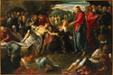

From
the collection

Tintoretto (Jacopo Robusti)
The Raising of Lazarus
About 1558-1559
Oil on canvas
H.70-7/8 x W.108-1/4 in.
The Centennial Fund
The
raising of Lazarus from the dead was one of the miracles performed by
Christ. Tintoretto excelled at large, crowded paintings of biblical
events, infused with spiritual intensity and meant to appeal to the
viewer's emotions. Exploiting Mannerist devices such as elongated forms,
exaggerated perspective, startling juxtapositions of vivid colors, and
theatrical lighting, he achieved scenes of stirring drama. Tintoretto
laid out his compositions quickly, employing a Venetian technique of
vigorous, broken brushwork called alla prima. This involved applying
one layer of paint over another, before the first layer dried, so that
mixing of the colors took place directly on the canvas. At the upper
right, Tintoretto may have included his self-portrait as the man seen
from behind in conversation with the painter Titian.